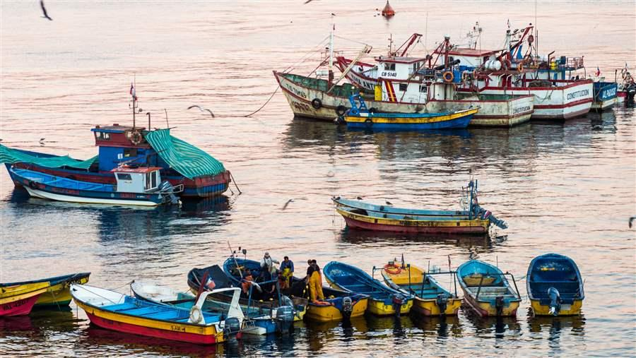
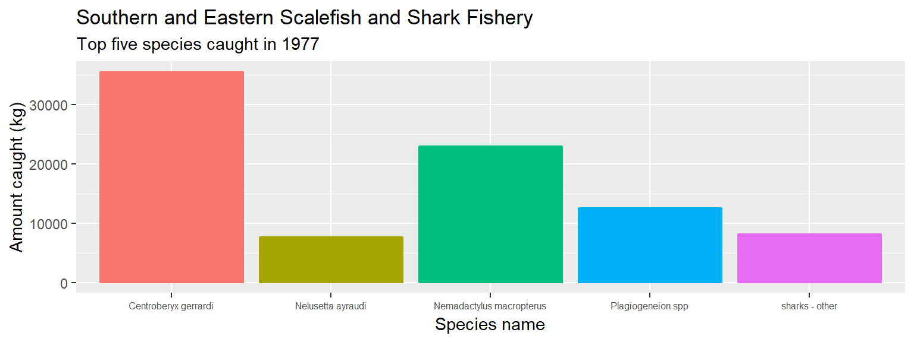
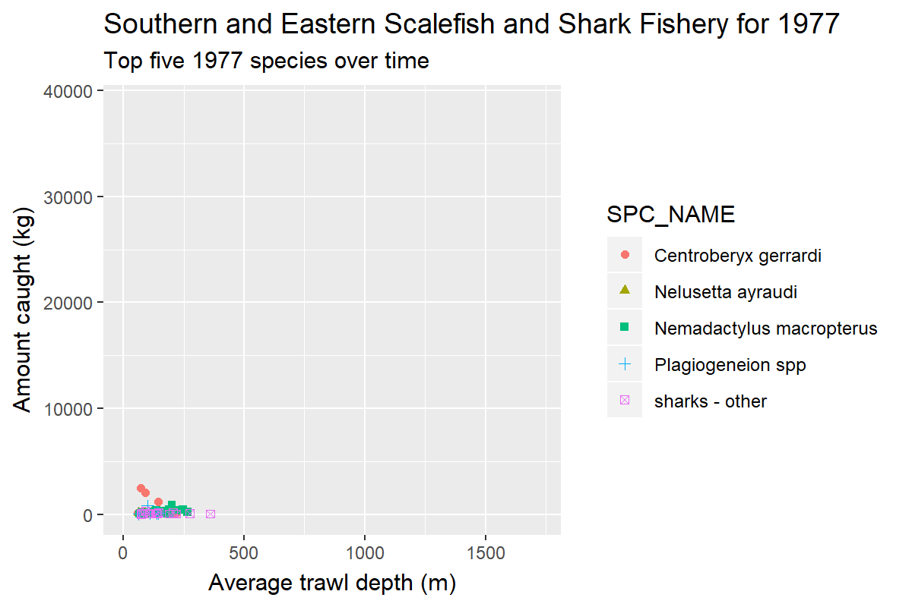

Oceans & Atmosphere
I’m Linda Thomas from Oceans & Atmosphere in Hobart. I’ve had varied roles during my 14 years at CSIRO - Oracle database development, MNF Data Librarian. Before Data School I wouldn’t say I could code very well, just do simple SQL scripts and my daily routine was varied involving anything from data collection, some basic data interpretation & general project activities.
The Lenfest Project is a collaboration with researchers, managers, and policymakers in four countries (Chile, India, USA and Australia) to provide guidance for selecting indicators of ecosystem structure and function, and operationalising Ecosystem Based Fishery Management (EBFM) in a diversity of contexts. The Australian case study is looking at how the chosen indicators can be applied to the Southern and Eastern Scalefish and Shark Fishery (SESSF) as this fishery has many species caught and differing gear types used. The fishery data was downloaded from an Australian Fisheries Management Authority (AFMA) Oracle database (hosted by CSIRO) and consists of 6919734 rows of data. The SESSF is made up of 11 sub-fisheries which catch at total of 469 species. One of the indicators to be looked at, is how species compostition of the catch has changed over time. To this, the imported data was filtered to removed all non-year values, then due to the large amount of data, the species that were caught over 200 times were extracted by fishery sub-type for each year.
I have been using R Studio to visualise the data, picking up skills in importing & tidying data, converting data to a required format, graphing the data and presenting it in Rmarkdown. I have also completed a draft Research Data Management Plan for the project
I’ve really liked using the plotting features, especially gganimate to help bring data to life. Shiny looks good too!
My time went mainly on importing and filtering down my data as it is a large dataset to start with (nearly 7 million rows). I also spent time using ggplot to graph my data, then think about what I really needed to show and subset my data again, before regraphing.
What I would like to do in the future is help develop a Shiny app that allows a user to calculate the indicators based on information provided with a tab for each indicator grouping eg biological, social, economic. This will allow managers and policy makers to get a feel of how the fisheries have changed over time.
| Year | Species name | Sub-fishery | Catch amount (kg) |
|---|---|---|---|
| 1977 | Centroberyx gerrardi | Great Australian Bight - Trawl fishery | 35445 |
| 1977 | Nemadactylus macropterus | Great Australian Bight - Trawl fishery | 22958 |
| 1977 | Plagiogeneion spp | Great Australian Bight - Trawl fishery | 12596 |
| 1977 | sharks - other | Great Australian Bight - Trawl fishery | 8191 |
| 1977 | Nelusetta ayraudi | Great Australian Bight - Trawl fishery | 7671 |
| Note: | |||
| Data taken from AFMA database |
Images from a file
 Fishing boats from Valparaiso, Chile
Plots from R 
Animations just to show off a digital poster 
My experience of Data School - FOCUS is that it has been really worth while - both from the course content side as well meeting the other course participants. Stephen and Nat have worked hard to put together a really fantastic course. I feel much more confident in my ability to solve data questions.
Even though I’m yet to apply most of what I have learnt across the six projects I work on, memebers of my group now know of my skills (I even presented this poster at a team mini symposium!). Out of the six projects I’m currently on, I’ve drafted four Research Data Management Plans and think in a more “data like” way. I even look at plots and figure out how to do them in ggplot…